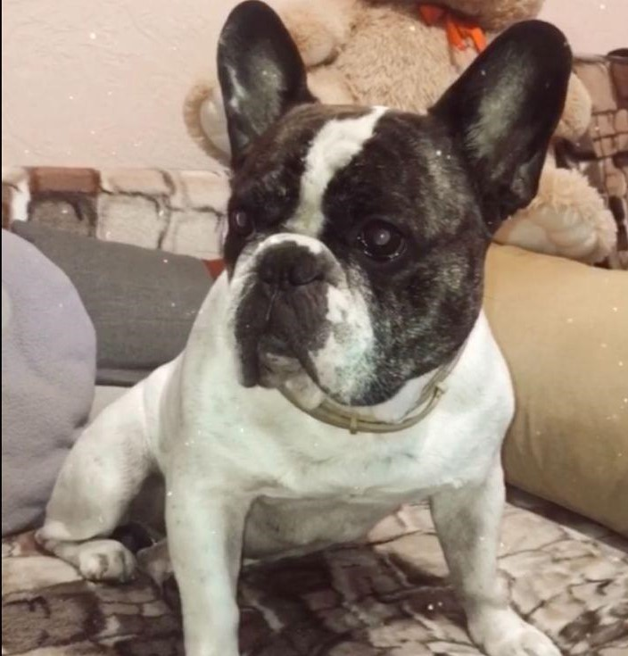

Мене звати Марина Козаченко та я хочу розповісти трішки про себе.
Я народилась 24.05.2001 в місті Київ.
На даному етапі життя вчуся в Національному авіаційному університеті за фахом інженерія програмного забезпечення на другому курсі.
До університету навчалась в Київському коледжі зв'язку два роки за цим же фахом.
У вільний час підробляю репетитором з математики для молодших класів.
|  |
Це мій песик Арчібальд! Він народився в місті Київ та йому вже вісім років. З'явився цей улюбленець в моїй сім'ї, коли йому було 2 місяці. |
|
Порода мого улюбленця - французький бульдог. |
|
|
Стандарт француза змінювався неодноразово. Останню версію прийняли лише в 1995 році. Згідно з ним собаки цієї породи повинні мати зріст до 35 см і вага до 14 кг. Тривалість життя міцної і мініатюрної собаки в середньому становить 12 років. Французькі бульдоги дуже добрі і ласкаві собаки. У них зовсім немає агресії. Вихованці добре ладнають з маленькими дітьми. Але при цьому всьому бульдоги дуже сміливі собаки. Декоративна псина, не чуючи страху, із задоволенням підійде до великого вихованця. |
|
Що полюбляє:
|
Що ненавидить:
|
| Досвід роботи | Scills |
|---|---|
| Середній | Танцювати |
| Середній | Малювати |
| Малий | Іспанська мова |
| Малий | Грати у футбол |
| Великий | Ворожіння на Таро |
| Великий | Готувати |
| Середній | Співати |
| Великий | Фотографувати |
| Середній | Програмування |
| Великий | Монтувати відео |
| Skills | ||
| Ворожіння на Таро⭐️⭐️⭐️⭐️⭐️ | Малювати⭐️⭐️⭐️ | |
| Фотографувати⭐️⭐️⭐️⭐️ | Грати у футбол⭐️ | |
| Співати⭐⭐️⭐️ | Іспанська мова⭐️ | |
| Танцювати⭐️⭐️⭐️ | Монтувати відео⭐️⭐️⭐️⭐️⭐️ | |
| Програмування⭐️⭐️⭐️ | Готувати⭐️⭐️⭐️⭐️⭐️ | |